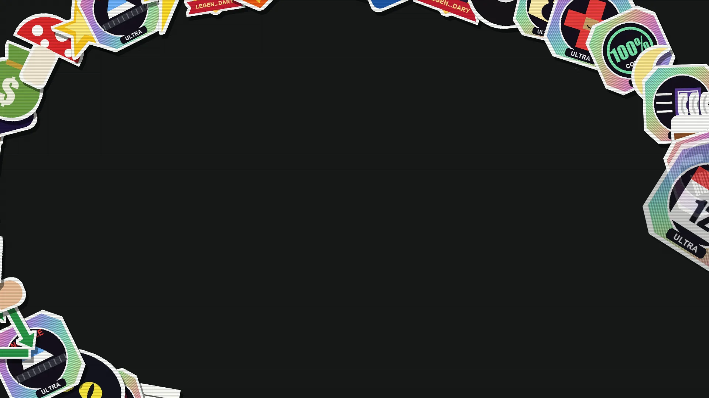
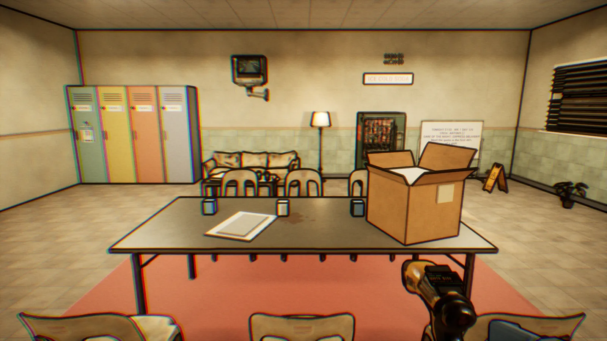
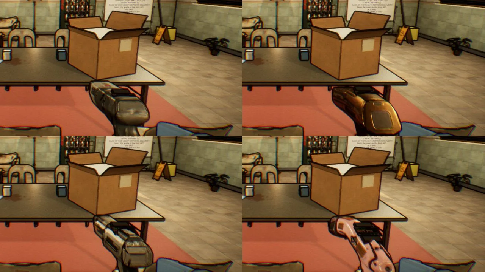
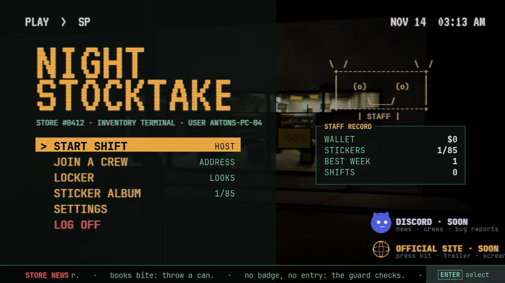

Пресс-кит
Всё, что нужно, чтобы писать о Night Stocktake, стримить или снимать видео. Все материалы можно свободно использовать в публикациях и видео.
Факты
МАГАЗИН #0412
До четырёх ночных работников пересчитывают товар в гипермаркете, который сам себя переставляет, когда никто не смотрит. Сканируйте, носите, сдайте норму - и уходите в шесть.

Об игре
Night Stocktake - кооперативный хоррор о худшей ночной смене в рознице. Отметьтесь на смену вместе с тремя друзьями, возьмите сканер и тележку и пересчитайте всё в гипермаркете, который не желает стоять на месте: свет мигает, стеллажи переставляются, отделы меняются местами, стоит только отвернуться. Карта на планшете - лишь снимок, и он быстро устаревает.
С вами в ночь работают ещё шестеро: манекены, которые двигаются, только когда их не видят; книга, которая кусается; покупатель, рядом с которым нельзя сканировать; погрузчик, который никогда не тормозит; кассирша, пробивающая всех, кто встанет на её кассе; и охранник, проверяющий бейджи. Выполните норму, отметьте уход в шесть и потратьте зарплату на карты покупателя, наклейки, головы, шапки и скины сканера.
Ключевые особенности
- Ночные смены в онлайн-кооперативе на 1-4 игроков
- Магазин, который переставляет себя, когда на него не смотрят
- Физика: шаткие тележки, падающий товар, холодильники на двоих
- Шесть угроз, каждая по-своему охотится на шум
- 85 наклеек-достижений для бейджа и головы-коробки
- Кастомизация головы-коробки: головы, шапки, обувь, лица, скины сканера, шкафчики
Стримьте. Монетизируйте.
- Вы можете стримить, записывать и публиковать видео по Night Stocktake на YouTube, Twitch, TikTok, Kick и любых других платформах.
- Вы можете монетизировать эти видео и стримы (реклама, подписки, спонсорство, партнёрские программы). Разрешение или письменная лицензия не нужны.
- Музыка и звуковые эффекты игры не зарегистрированы в Content ID. Если на запись Night Stocktake всё же придёт заявка, напишите нам - мы поможем её снять.
- Вы можете использовать логотипы, ключевой арт и скриншоты с этой страницы в превью и публикациях.
- Пожалуйста, не создавайте впечатления, что ваш контент сделан, спонсирован или одобрен StaleMilk Games, если это не так.
- Ссылка на игру в описании приветствуется, но не обязательна.
Мы можем обновлять эти правила; действует версия, опубликованная на этой странице.

Логотипы, ключевой арт, скриншоты
Нажмите, чтобы открыть в полном размере. Всё (в PNG) есть в presskit.zip.
 Ключевой арт
Ключевой арт

Ключевой арт, без логотипа Карточка для соцсетей 1200×630
Карточка для соцсетей 1200×630








 Манекен
Манекен Книга
Книга Покупатель
Покупатель Погрузчик
Погрузчик Кассирша
Кассирша Охранник
Охранник